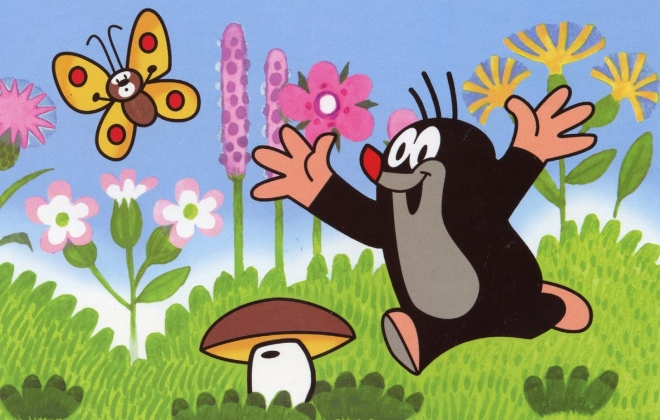
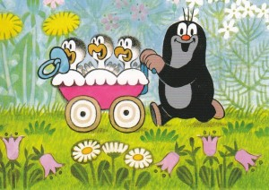
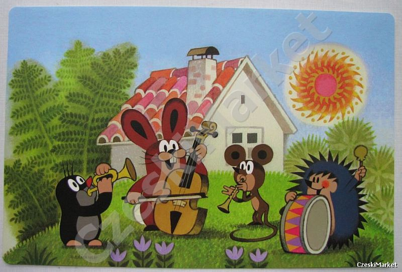
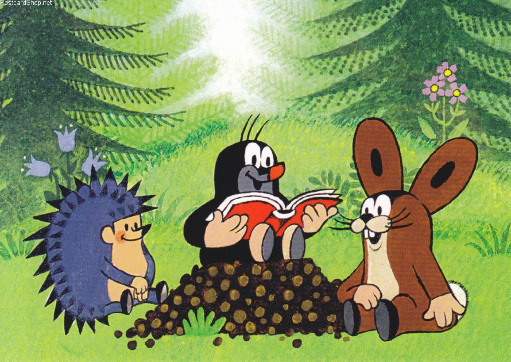

Krecik (po czesku Krtek) – czeski (początkowo czechosłowacki) cykl filmów animowanych dla dzieci. Stworzył go Zdeněk Miler.
Początkowo wydawało się Milerowi, że kret jest zwierzątkiem zbyt mało medialnym; ponadto wizerunki kreta, które zobaczył w atlasie przyrodniczym, nie spodobały mu się. Postanowił przestylizować postać według własnego pomysłu - i tak narodził się Krecik.
Pierwszy film opowiadający o tym, jak Krecik dostał nowe spodenki, powstał w roku 1956. Autor początkowo nie zamierzał tworzyć serialu. Duży sukces filmu o Kreciku sprawił jednak, że Miler postanowił wrócić do swego bohatera. W roku 1962 powstał kolejny film o Kreciku: Krecik i autko; był to początek serii, której kolejne odcinki powstają do dziś.
"Ahoj"
| KRECIK | ||
|---|---|---|
|  |  | |
| KRECIK I PRZYJACIELE | ||
|  |  | |
| krecik | ||
| |
||